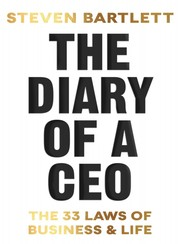

Welcome to the February 2026 roundup! Similar to last time, here I document anything interesting I come across each month, from articles and books to skills and beyond. This is more for my personal reference and benefit but may also help others.
This was a really important historical overview over the rise of one of the most ubiquitous1 text document formats used on the web, i.e. markdown. Dash worked at Movable Type, an influential blogging platform in the early 21st century. Key takeaways:
Motivation.John Gruber originally developed markdown to simplify his blogging experience with Movable Type.
Success. Is owed to a collection of favorable events and good design, i.e. rise of blogging, brilliant branding (markdown as the simplification of markup), easy syntax which could be picked up in just a few minutes, open-sourced (not monetized) with a helpful community.
On a personal note, Rmarkdown was revolutionary in developing reproducible and version-controlled data science workflows. It showcased the power of literate programming in the “Big Data” era. With the rise of amazing packages like Quarto, markdown continues to evolve and still shapes blogging2 more than two decades later 🎆.
A truly remarkable lecture by Prof. Rush’s distilling the five features of LLMs that make them ‘tick’.
1. Perplexity
⟷
Generation.
2. Attention
⟷
Memory.
3. GEMM
⟷
Scaling.
4. Chinchilla
⟷
Efficiency.
5. RASP
⟷
Reasoning.
This tutorial really helped me to build a good mental model when studying llms deeply, or applying them in practice. Prof. Rush intentionally leaves out certain topics3 which are also useful for explaining LLM performance, e.g. human feedback, post-attention, new architectures, low-resource llms, and mechanistic interpretability.
I plan to reflect on and return to this lecture multiple times4. Highly recommend!
Books
Audiobooks
Caution🎯 Try Audiobooks - You Might Be Surprised
I came to a epiphany in early 2026, namely, that for me self-help books should be listened to as audiobooks rather than read as paperbacks. This simple change has made a world of difference. I previously found the act of reading such books quite tedious and dry, given their often prescriptive tone. Now I can use my idle walking time to listen to them. Many audiobook platforms (e.g. Spotify, Audible) include these titles in their premium memberships. In case you have felt similarly about this genre, this tip might help you sample more of it. There is often some nugget to take away from each one.
This is a genuinely remarkable book and one that I’m more than a decade late to6. I had heard all of the “spark joy” memes when the Netflix show landed, and simply assumed this was another decluttering gimmick and ignored it. How wrong I was. This is a very deep book about life prioritization disguised as a home tidying manifesto. I learned many practical skills, but the main four biggest takeaways were as follows.
One and Done. Marie Kondo (or ‘KonMari’) notes that tidying your home should be one-off activity, not a recurring one as often recommended by other books in this genre. This is the key motivation to “get your house in order” as KonMari says.
Categories not rooms. An amazing approach of this book is to focus on categories of items rather than rooms, when tidying ones home. So tidying books doesn’t mean to do a separate bookshelf each day, but all bookshelves in the house at once. Moreover KonMari mentions a prioritization order for categories to aid decision fatigue: clothes, books, papers, komono (miscellaneous), and sentimental items. It is this tip which makes the “one and done” approach to tidying feasible.
Qualitative > Quantitative. The book emphasizes the use of qualitative over quantitative decision making for tidying. So no more “one in, one out” type rules to remember. Instead you get advice like “when you are choosing what to keep, ask your heart, when you are choosing where to store something, ask your house”. Strangely, I found this to be very practical.
Principled.Maintaining tidyness can be done via principled methods, e.g. the KonMari folding technique.
An overarching theme of the book is that tidying is only the first step towards prioritizing your life, not the final one. Highly Recommend.
How to Win Friends and Influence People
by Dale Carnegie (narrator: Andrew MacMillan) 🎧7. ★★★★★
NoteKey Takeaways
If I was asked to name “a classic in the motivational self-help literature”, this would be the first title that would come to mind. Although I’m late to the party, this book ended up providing many useful guidelines for improving my interactions with other people. The book is split into fairly universal themes including: dealing with people, becoming more likable, moving people towards your way of thinking, and how to lead without causing offense. My main takeaways were as follows.
Positivity focus. When dealing with other people always engage with positivity, empathy, and kindness.
Small sincere gestures. Correctly pronouncing and acknowledging the another’s name (“the sweetest sound and most important sound to that person”), asking thoughtful questions, listening intently, and making the other person feel important are all good habits to cultivate daily in a sincere manner.
Discussion not argument. Carnegie notes that there are never any “winners” in an argument. He advocates for healthy debate where necessary, but to avoid approaching it as a point scoring contest to fuel one’s ego. For me, the biggest win here is saving time and energy by simply refusing to engage in trivial arguments.
Some critiques were that many of the references were a bit dated, but these can be corrected for mentally, e.g. just replace “writing a letter” with “sending an email/text”. A more serious issue is that Carnegie often plays out the ‘best case’ scenario for using his strategies, and that many of his recommendations are not field tested with formal experiments. But again, erring on the side of positivity is not a bad approach to most interactions, so these should not be dealbreakers and could be supplemented with more modern literature. Would recommend.
Diary of a CEO

by Steven Bartlett (narrated by the author) 🎧8. ★★★★★
NoteKey Takeaways
This was recommended to me by Spotify audiobooks. The book title is eponymous with a wildly popular podcast run by the author, where he interviews various celebrities and entrepreneurs on lessons to improve ones daily life. I had never listened to the podcast previously, so went into this fresh. I enjoyed the fact that it was read by the author. Interestingly, I learned more about eloquent storytelling and techniques for effective message delivery through the audiobook reading than from the contents of the book.
The book itself is framed as “The 33 laws for business and life” and strikes quite a serious tone. Much of the business advice is framed in the context of improving branding, e.g. “avoid wallpaper at all costs”. This is unsurprising given the author’s background in building a successful marketing firm in the UK. So ones mileage may vary depending on your personal and professional goals. My main practical takeaway was:
Small details matter. Bartlett notes that “you must sweat the small stuff”, i.e. details matter. Here he emphasises the notion of Kaizen as a business philosophy to measure and focus on incremental gains in ones regular activities. He notes, for example, that his podcast team go all out in interview preparation for new guests. This involves thoroughly researching their guests and understanding their preferences on intricacies like beverage, music, lighting, and calibrating the interview room accordingly. I found this type of focused attention to detail quite cool and practical. This inspired me to apply the same principle to my own relationships, by listening more attentively to friends and family and acting on those details.
Overall, a fun modern take on motivational self-help, but would only recommend if you are a fan of the podcast.
Skills
I really enjoy learning new practical skills in a principled manner. This way, even the most routine tasks become easy and, most importantly, fun 🤹.
Here are some of the cool skills I picked up this month. Try them out!
After recently becoming a student of KonMari, I decided to raise my folding game with her method. Game changer! The main idea can be summarized in three-steps:
Shapes matter. Rectangular shapes are easiest to repeatedly fold down.
Rectangulate. First fold any item into the largest rectangle9 (see video).
Divide and stand. Repeatedly fold down the rectangle so that the item stands vertically.
After collecting hundreds of cables and wires over the years, I’d never learned a proper way to coil them. The “roadie-wrap” is a well-tested technique used by grips who have to coil (and uncoil!) hundreds of cables daily. It works a treat with these gains:
Tangle-free. Uncoiling doesn’t lead to tangles.
Easy recoiling. Recoiling is a matter of nailing the over/under technique (see video).
Durability. Use this on all cables, and they will last a lot longer.
Concluding Thoughts
Overall, this was quite an eventful month of activities for me. Also it took all my energy to fire up the blog after a four year hiatus 😬. Hopefully I’ll keep adding to it more regularly this year!
WarningLLMs Usage Declaration
All reviews, opinions, and written content in this post, unless explicitly stated, are authored by me, a human. LLMs were used solely for formatting purposes, such as layout assistance, writing git commits, sourcing thumbnails, adding alt-text, and generating the thumbnail image for this post.
Footnotes
And increasingly so, with modern LLM specification docs like MCP and skills.↩︎